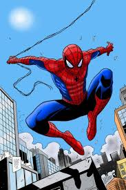

Spiderman, the peter Parker"superhero," is my favorite character Spider-Man is a beloved superhero created by Stan Lee and Steve Ditko for Marvel Comics. His real name is Peter Parker, a young man who gains spider-like abilities after being bitten by a radioactive spider. Using his powers — such as wall-crawling, web-shooting, and enhanced strength — he fights crime in New York City while balancing his personal life. Guided by his uncle’s words, “With great power comes great responsibility,” Spider-Man stands as a symbol of courage, sacrifice, and resilience.